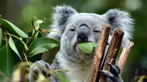

Koala
The koala is an iconic Australian animal. Often called the koala “bear,” this tree-climbing animal is a marsupial—a mammal with a pouch for the development of offspring.
- COMMON NAME: Koala
- SCIENTIFIC NAME: Phascolarctos cinereus
- TYPE: Mammals
- DIET: Herbivore
- AVERAGE LIFE SPAN IN THE WILD: 20 years
- SIZE: 23.5 to 33.5 inches
- WEIGHT: 20 pounds
The koala is an arboreal herbivorous marsupial native to Australia. Koalas typically inhabit open eucalypt woodlands, and the leaves of these trees make up most of their diet. Because this eucalypt diet has limited nutritional and caloric content, koalas are largely sedentary and sleep up to 20 hours a day.